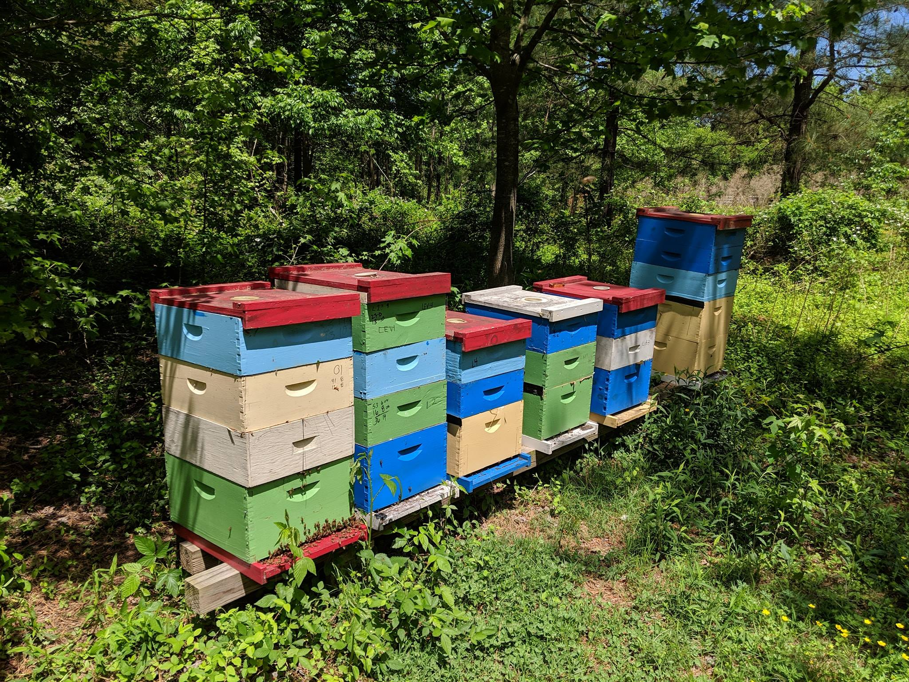
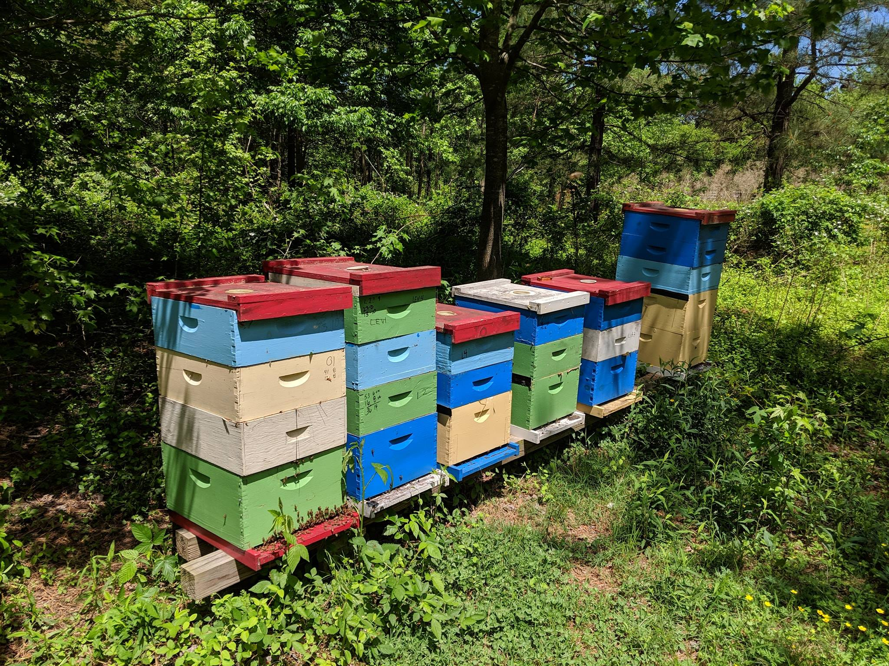

Discover the passion, dedication, and ethical practices behind every jar of Smokey Creek honey.
 

Smokey Creek Bee Farm is not just a business; it's a profound family commitment rooted in a deep respect for nature and the vital role of honeybees. Owner Justin's fascination with these incredible insects sparked over two decades ago during his college years. What began as a curious elective course blossomed into a lifelong passion, evolving into the ethical and sustainable beekeeping operation you see today. Every decision we make is guided by the philosophy that healthy bees produce the best honey, and we are dedicated to fostering thriving bee populations.
Unlike large commercial operations that move hives across states, our bees are cherished residents of the North Carolina Piedmont. Most of our honey is produced right here in the heart of our local communities, including zip codes 27406, 27317, and 27298. This hyper-local approach ensures a genuine connection between the beekeeper, the bees, and the nectar they collect. For a unique treat, a select few of our hives also enjoy a summer retreat to the high elevations of the NC mountains (zip code 28743), where they gather the distinct nectar for our highly sought-after Sourwood honey. This direct, transparent sourcing means you know exactly where your honey comes from.
Have you ever wondered why most grocery store honey tastes the same? It's often blended from various sources to achieve a consistent flavor and color. At Smokey Creek, we celebrate nature's diversity. Our honey is **raw and unfiltered**, meaning it's never subjected to high heat or excessive processing. This allows it to retain all its natural enzymes, beneficial pollens, and the unique "terroir" of our region. You'll discover that the color and flavor of our honey beautifully vary from year to year, and even month to month, depending on the specific wildflowers in bloom and the prevailing weather conditions. Each jar is a pure reflection of North Carolina's natural landscape, delivering a rich and authentic taste experience.
The health of our bees is paramount. Commercial beekeepers often pack hundreds of hives into small, high-density yards, which can lead to increased stress, pests, and disease exposure, and often high exposure to pesticides, fungicides, and herbicides. We do things differently. Our hives are strategically placed in carefully selected locations where we prioritize low chemical usage. In fact, roughly a third of our hives reside on a certified organic farm. We also limit the number of hives at each site to ensure a natural, healthy balance between our bees and their environment. This partnership with landowners who care for their land as much as we care for our hives is fundamental to our practice.
While we do not carry a formal "certified organic" label—a designation that involves significant application, inspection, and recurring fees (often around $1,500 annually for small operations) which would inevitably increase costs for you, our valued customer—we are unwavering in our adherence to **organic practices**. This means we only use naturally derived organic acids to treat our bees for diseases and viruses, ensuring their health and vitality without introducing any harmful chemicals or additives. Our commitment is to provide you with honey and bee products that are as pure, natural, and unprocessed as possible, just as they were enjoyed generations ago.
Curious to try our honey?
Contact Us to Order